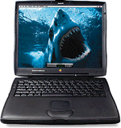

Un mot de l'auteur...
 J'ai actuellement 19 ans et cela doit faire huit ans que j'utilise des Macs. Le premier fut un Classic 4/40, lequel remplaça un bon vieux Atari 520STE. Ensuite arriva un PowerMac 6100/60 16/250 qui dura deux ans. Il y a encore quelques temps, je travaillais sur un PowerMac 7600/132 64/2G ainsi qu'un PowerBook 3400/180, que j'ai finalement revendus pour acquérir un PowerBook G3 250/64M 4G/20x... Une vraie bête de course, je confirme.
J'utilise ce G3 pour faire essentiellement de la programmation (en C/C++ avec Symantec C++ 8.1), de la création graphique (Ray Dream Designer, Strata Studio Pro, Photoshop, Painter, Premiere...), des sites web...
Bonne visite du site et à bientôt!
Newman.
Note: désormais, les pages modifiées lors de la dernière mise à jour seront suivies de ce logo: 
Liste des resources:
Avant tout, les logiciels:
- French Touch, groupe d'un programmeur et de 4 graphistes créateurs de jeux 3D sur PowerMac.
- AudioFusion, une WorkStation Techno pour PowerMacintosh et une suite de logiciels audio / vidéo.
- pleins de freewares que j'ai réalisés.
- OXYD Project, un jeu de type shoot-them-up en milliers de couleurs et plein écran pour PowerMacintosh.
- WindRacer, un jeu de funboard en 3D temps réel, milliers de couleurs et plein écran pour PowerMacintosh G3, utilisant le processeur 3D ATI.
Les rubriques diverses:
Les sites web:
- PowerToolBox: du code source et des kits de développement gratuits en C/C++ concernant le multimédia sur PowerMac: audio, vidéo...
- Mac Expert Magazine: un e-zine au format DocMaker concernant l'utilisation avancée du Mac: ResEdit, trucs et astuces, programmation...
 Il est fortement recommandé d'utiliser Netscape pour visiter ces sites.
Il est fortement recommandé d'utiliser Netscape pour visiter ces sites.